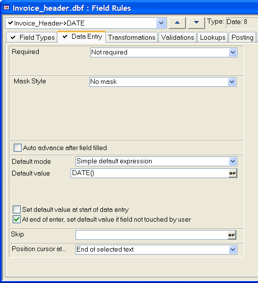
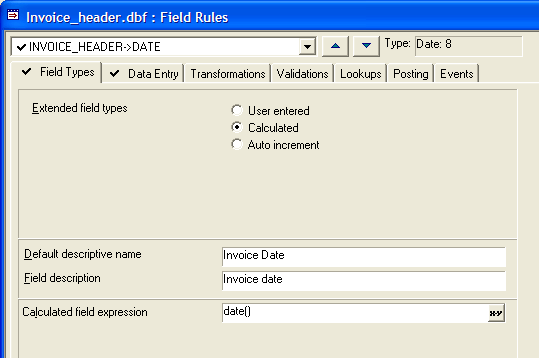

Defaulting a Date Field to Today's Date
Frequently, you will want to assign today's date as a default value to a field. There are two ways to do this using field rules.
Default Value
This procedure assigns a value, but only if the user does not input one first.
Select the table in the Table/Sets tab of the Control Panel.
Click Design > Field Rules.
Select the field from the drop-down list box at the upper left corner of the dialog box.
On the Data Entry tab, in the Default mode list, select "Simple default expression".
Enter date() in the Default value field.
Check At end of enter, set default value if field not touched by user.
In the Position cursor at list select "End of selected text".
Click
 and Yes to save your results.
and Yes to save your results.
The following picture shows the Field Rule configuration for the Date field of the Invoice_Header table.

Calculated Field
This procedure may not be appropriate for all applications. Recalculating field rules will re-assign today's date to old records.
Select the table in the Table/Sets tab of the Control Panel.
Click Design > Field Rules.
Select the field from the drop-down list box at the upper left corner of the dialog box.
On the Field Types tab, in the Extended Field Types area, select Calculated.
Enter date() in the Calculated field expression field.
Click
and Yes to save your results.
The following picture shows the Field Rule configuration for the Date field of the Invoice_Header table.
